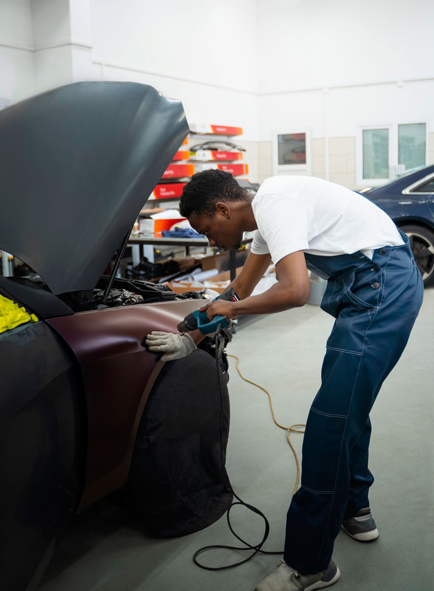

Claudio Narea
Experto en Electrónica de Autos

Datos Personales:
Nombre: Claudio Narea
Área de especialización: Electrónica de Autos
Estudios universitarios: Licenciatura en Ingeniería Electrónica, Universidad Nacional de Ingeniería (UNI)
Años de experiencia: 15 años
Resumen profesional:
Jorge González es un destacado experto en electrónica de autos con una amplia trayectoria en el campo automotriz. Posee una sólida
formación
académica y una gran experiencia práctica en el diseño, desarrollo y mantenimiento de sistemas electrónicos aplicados a vehículos.
Educación:
Licenciatura en Ingeniería Electrónica, Universidad Nacional de Ingeniería (UNI)
Durante sus estudios universitarios, Jorge González adquirió los conocimientos fundamentales en electrónica, sistemas digitales,
microcontroladores
y circuitos integrados, sentando las bases para su carrera en el ámbito automotriz.
Experiencia profesional:
Jorge González ha trabajado en importantes compañías automotrices, desempeñando funciones clave y liderando proyectos relacionados con
la
electrónica
de autos. Su experiencia incluye:
- Alto Técnico en desarrollo de sistemas electrónicos en XYZ Motors (2010-2014):
- Diseñó y desarrolló sistemas electrónicos para vehículos de última generación, incluyendo sistemas de control de motor,
sistemas de
seguridad y sistemas de infoentretenimiento.
- Participó en el diseño de circuitos impresos y en la selección de componentes electrónicos de alto rendimiento.
- Colaboró estrechamente con equipos multidisciplinarios, como ingenieros mecánicos y de software, para lograr soluciones
integradas.
- Especialista en diagnóstico y reparación de sistemas electrónicos en ABC Automotive (2014-2018):
- Realizó diagnósticos precisos de fallas en sistemas electrónicos de vehículos, utilizando herramientas y equipos
especializados.
- Lideró equipos de trabajo en la reparación de sistemas electrónicos complejos, asegurando la calidad y eficiencia en el
proceso.
- Desarrolló estrategias de mantenimiento preventivo para optimizar el rendimiento y la confiabilidad de los sistemas
electrónicos de los
vehículos.
- Coordinador de Proyectos en Rayo Mc' Queen
- Dirige proyectos de desarrollo de sistemas electrónicos para clientes automotrices de renombre.
- Coordina equipos de ingenieros y supervisa el cumplimiento de los plazos, presupuestos y requisitos de calidad.
- Trabaja en estrecha colaboración con los clientes para comprender sus necesidades y garantizar soluciones personalizadas.